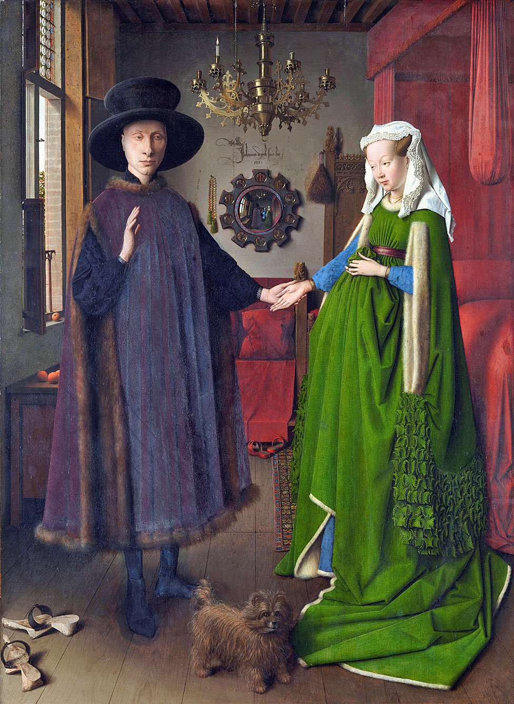

Información General
Ubicación: Londres, Reino Unido
Horario: 10:00 - 18:00
Precio: Entrada gratuita
Colecciones Destacadas
- El matrimonio Arnolfini
- Los embajadores
- El último viaje del «Temerario»
Historia y Arquitectura
Fundada en 1824, la galería alberga más de 2,000 pinturas europeas. Su edificio neoclásico domina Trafalgar Square y es un ícono de la vida cultural londinense.

Obra: El matrimonio Arnolfini

Obra: Los embajadores

Obra: El último viaje del «Temerario»